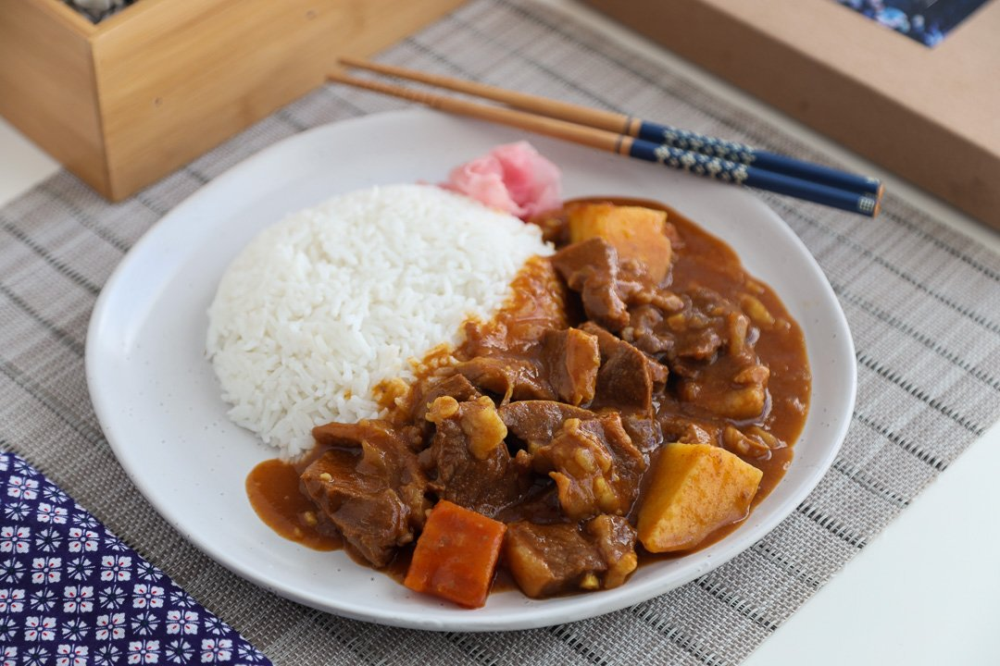

Curry Rice Recipe

Description
Delicious Japanese chicken curry recipe
for a weeknight dinner! Tender pieces of
chicken, carrots, and potatoes cooked in a
rich savory curry sauce, this Japanese
version of curry is a must-have for
your family meal. (taken from justonecookbook)
Ingredients
- Japanese Curry Roux
- Your choice of spice
- Meat/Protein
- Onions
- Potatoes
- Carrots
- Garlic
- Honey
- Apples
- Rice
Steps
- Start to cook rice.
- Cut the protein source of your choice, and vegetables into bite-sized chunks.
- Heat olive oil in a pot and add garlic and onion to add fragrance.
Add vegetable chunks and chicken to fry.
- Add vegetable chunks and chicken to fry.
- Pour water into the pot and stir in the grated apple and honey.
- Skim the scum off occasionally.
- When the vegetable and chicken is cooked, add the curry roux and turn the heat off.
- Make the curry roux pieces dissolve in a ladle with pair of chopsticks, one by one.
- Serve with cooked rice.
*Ingredients and Steps taken from Chopstick Chronicles